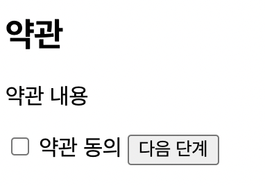
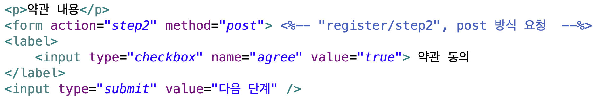
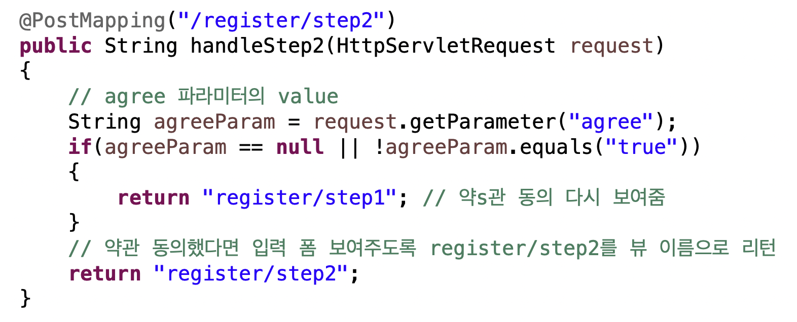

<meta charset="utf-8">
<html lang="ko">
<head>
    <link rel="stylesheet" type="text/css" href="./../style.css" />
    <title>Ch11. MVC 1 : 요청 매핑</title>
</head>
<body id="tt-body-page" class="">
<div id="wrap" class="wrap-right">
    <div id="container">
        <main class="main ">
            <div class="area-main">
                <div class="area-view">
                    <div class="article-header">
                        <div class="inner-article-header">
                            <div class="box-meta">
                                <h2 class="title-article">Ch11. MVC 1 : 요청 매핑</h2>
                                <div class="box-info">
                                    <p class="category">Web</p>
                                    <p class="date">2022-07-12 21:41:35</p>
                                </div>
                            </div>
                        </div>
                    </div>
                    <hr>
                    <div class="article-view">
                        <div class="contents_style">
                            <p data-ke-size="size16">스프링 MVC를 사용해 웹 어플리케이션을 만든 다는 것은 결국&nbsp;<b>컨트롤러와 뷰&nbsp;</b>코드를 구현한다는 것을 뜻한다.</p>
<p data-ke-size="size16">&nbsp;</p>
<p data-ke-size="size16">예제 프로젝트를 만들어가보자.&nbsp;</p>
<p data-ke-size="size16">우선 설정 파일들이다.&nbsp;</p>
<p data-ke-size="size16">&nbsp;</p>
<h4 data-ke-size="size20">sp5-chap11/src/main/java/config/<b>MemberConfig.java</b><b></b></h4>
<div data-ke-type="moreLess" data-text-more="더보기" data-text-less="닫기">
<div class="moreless-content-ignore">
<pre id="code_1657626548236" class="java" data-ke-language="java" data-ke-type="codeblock"><code>package config;

import org.apache.tomcat.jdbc.pool.DataSource;
import org.springframework.context.annotation.Bean;
import org.springframework.context.annotation.Configuration;
import org.springframework.jdbc.datasource.DataSourceTransactionManager;
import org.springframework.transaction.PlatformTransactionManager;
import org.springframework.transaction.annotation.EnableTransactionManagement;

import spring.ChangePasswordService;
import spring.MemberDao;
import spring.MemberRegisterService;

// DataSource, 트랜잭션, 서비스 클래스, DAO 클래스 설정 파일 
@Configuration
@EnableTransactionManagement
public class MemberConfig 
{
	@Bean(destroyMethod="close")
	public DataSource dataSource() 
	{
		DataSource ds = new DataSource();
		ds.setDriverClassName("com.mysql.cj.jdbc.Driver");
		ds.setUrl("jdbc:mysql://localhost:3306/spring5fs?characterEncoding=utf8");
		ds.setUsername("spring5");
        ds.setPassword("1234");
        ds.setInitialSize(2); // 커넥션풀을 2개 만들어 놓는다
        ds.setMaxActive(10); // 활성 상태 가능한 최대 커넥션 개수 10
        ds.setMaxIdle(10);
        // 10초 주기로 유휴 커넥션이 유효한지 여부 검사, 최소 유휴 시간 3분으로 지정
        ds.setTestWhileIdle(true); // 유휴 커넥션 검사 true
        ds.setMinEvictableIdleTimeMillis(1000 * 60 * 3); // 최소 유휴 시간 3분 설정
        ds.setTimeBetweenEvictionRunsMillis(10 * 1000); // 10초 주기로
        return ds;
	}
	
	@Bean 
	public PlatformTransactionManager transactionManager() 
	{
		DataSourceTransactionManager tm = new DataSourceTransactionManager();
		tm.setDataSource(dataSource()); // DataSource를 이용해 트랜잭션 연동에 사용할 DataSource를 지정함.
		return tm;
	}
	
	@Bean 
	public MemberDao memberDao() 
	{
		return new MemberDao(dataSource());
	}
	
	@Bean 
	public MemberRegisterService memberRegSvc() 
	{
		return new MemberRegisterService(memberDao());
	}
	
	@Bean
    public ChangePasswordService changePwdSvc()
    {
        ChangePasswordService pwdSvc = new ChangePasswordService();
        pwdSvc.setMemberDao(memberDao()); // 주입
        return pwdSvc;
    }
}</code></pre>
</div>
</div>
<p data-ke-size="size16"><b>MemberConfig</b>는 빈 설정 클래스다.&nbsp;</p>
<p data-ke-size="size16">내용을 보면 db 관련 설정들, DAO 클래스 관련 빈들이 있다.&nbsp;</p>
<p data-ke-size="size16">&nbsp;</p>
<h4 data-ke-size="size20">sp5-chap11/src/main/java/config/<b>MvcConfig.java</b></h4>
<div data-ke-type="moreLess" data-text-more="더보기" data-text-less="닫기">
<div class="moreless-content-ignore">
<pre id="code_1657626606964" class="crystal" data-ke-language="java" data-ke-type="codeblock"><code>package config;

import org.springframework.context.annotation.Configuration;
import org.springframework.web.servlet.config.annotation.DefaultServletHandlerConfigurer;
import org.springframework.web.servlet.config.annotation.EnableWebMvc;
import org.springframework.web.servlet.config.annotation.ViewResolverRegistry;
import org.springframework.web.servlet.config.annotation.WebMvcConfigurer;

// Spring MVC 설정 
@Configuration
@EnableWebMvc
public class MvcConfig implements WebMvcConfigurer
{
	// @Controller로 등록되지 않은 경로를 처리 
	@Override 
	public void configureDefaultServletHandling(DefaultServletHandlerConfigurer configurer) 
	{
		configurer.enable();
	}

	@Override 
	public void configureViewResolvers(ViewResolverRegistry registry) 
	{ 
		// JSP 를 이용해 컨트롤러의 실행 결과를 보여주도록 함 
		registry.jsp("/WEB-INF/view/", ".jsp");
	}
}</code></pre>
</div>
</div>
<p data-ke-size="size16"><b>MvcConfig</b>는 spring MVC 설정 클래스다.&nbsp;</p>
<p data-ke-size="size16">@EnableWebMvc 애노테이션으로 필요한 설정들을 설정하고 (RequestMappingHandlerMapping, RequestmappingHandlerAdapter 생성도한다). configureViewResolvers를 오버라이딩해 jsp 경로를 등록하고 있다.</p>
<p data-ke-size="size16">&nbsp;</p>
<h4 data-ke-size="size20">sp5-chap11/src/main/webapp/WEB-INF/<b>web.xml</b></h4>
<div data-ke-type="moreLess" data-text-more="더보기" data-text-less="닫기">
<div class="moreless-content-ignore">
<pre id="code_1657626878164" class="java" data-ke-language="java" data-ke-type="codeblock"><code>&lt;?xml version="1.0" encoding="UTF-8"?&gt;

&lt;web-app xmlns="http://xmlns.jcp.org/xml/ns/javaee" 
	xmlns:xsi="http://www.w3.org/2001/XMLSchema-instance"
	xsi:schemaLocation="http://xmlns.jcp.org/xml/ns/javaee 
             http://xmlns.jcp.org/xml/ns/javaee/web-app_3_1.xsd"
	version="3.1" metadata-complete="true"&gt;

	&lt;servlet&gt;
		&lt;servlet-name&gt;dispatcher&lt;/servlet-name&gt;
		&lt;servlet-class&gt;
			org.springframework.web.servlet.DispatcherServlet
		&lt;/servlet-class&gt;
		&lt;init-param&gt;
			&lt;param-name&gt;contextClass&lt;/param-name&gt;
			&lt;param-value&gt;
				org.springframework.web.context.support.AnnotationConfigWebApplicationContext
			&lt;/param-value&gt;
		&lt;/init-param&gt;
		&lt;init-param&gt;
			&lt;param-name&gt;contextConfigLocation&lt;/param-name&gt;
			&lt;param-value&gt;
				config.MemberConfig
				config.MvcConfig
				config.ControllerConfig
			&lt;/param-value&gt;
		&lt;/init-param&gt;
		&lt;load-on-startup&gt;1&lt;/load-on-startup&gt;
	&lt;/servlet&gt;

	&lt;servlet-mapping&gt;
		&lt;servlet-name&gt;dispatcher&lt;/servlet-name&gt;
		&lt;url-pattern&gt;/&lt;/url-pattern&gt;
	&lt;/servlet-mapping&gt;

	&lt;filter&gt;
		&lt;filter-name&gt;encodingFilter&lt;/filter-name&gt;
		&lt;filter-class&gt;
			org.springframework.web.filter.CharacterEncodingFilter
		&lt;/filter-class&gt;
		&lt;init-param&gt;
			&lt;param-name&gt;encoding&lt;/param-name&gt;
			&lt;param-value&gt;UTF-8&lt;/param-value&gt;
		&lt;/init-param&gt;
	&lt;/filter&gt;
	&lt;filter-mapping&gt;
		&lt;filter-name&gt;encodingFilter&lt;/filter-name&gt;
		&lt;url-pattern&gt;/*&lt;/url-pattern&gt;
	&lt;/filter-mapping&gt;

&lt;/web-app&gt;</code></pre>
</div>
</div>
<p data-ke-size="size16"><b>ContextConfigLocation</b>에 MemberConfig, MvcConfig, ControllerConfig를 추가하고 있다.</p>
<p data-ke-size="size16">&nbsp;</p>
<p data-ke-size="size16">&nbsp;</p>
<hr contenteditable="false" data-ke-type="horizontalRule" data-ke-style="style3" />
<h3 data-ke-size="size23"><b>@RequestMapping, @GetMapping, @PostMapping</b></h3>
<p data-ke-size="size16">스프링 MVC는 별도 설정이 없으면 GET, POST (html 태그 &lt;form&gt;의 메서드) 방식에 상관없이 <b>@RequestMapping</b>에 지정한 경로와 일치하는 요청을 처리한다.</p>
<p data-ke-size="size16">&nbsp;</p>
<p data-ke-size="size16">따라서 <b>POST 방식 요청만 처리하고 싶다면 @PostMapping</b>을, <b>GET 방식 요청만 처리하고 싶다면 @GetMapping</b>을 사용한다.&nbsp;</p>
<p data-ke-size="size16">&nbsp;</p>
<p data-ke-size="size16">또한 이 두 애노테이션을 사용하면 같은 경로에 대하여 GET, POST 방식을 각각 다른 메서드가 처리하도록 할 수 도 있다.</p>
<p data-ke-size="size16">&nbsp;</p>
<p data-ke-size="size16">참고로 url에 직접 주소를 입력해서 접근하는것은 GET 방식 요청이다.&nbsp;</p>
<p data-ke-size="size16">&nbsp;</p>
<hr contenteditable="false" data-ke-type="horizontalRule" data-ke-style="style3" />
<h2 data-ke-size="size26"><b>요청 매핑 애노테이션을 이용한 경로 매핑&nbsp;</b></h2>
<p data-ke-size="size16">&nbsp;</p>
<p data-ke-size="size16">회원가입 과정을 구현해보자.&nbsp;</p>
<p data-ke-size="size16">일반적으로 회원 가입은 <b>약관 동의 -&gt; 회원 정보 입력 -&gt; 가입 완료</b> 절차를 거친다.</p>
<p data-ke-size="size16">각 과정을 위한 경로는 다음과 같다.&nbsp;</p>
<p data-ke-size="size16">&nbsp;</p>
<p data-ke-size="size16">약관 동의 화면 요청 처리 : http://localhost:8080/sp5-chap11/register/step1</p>
<p data-ke-size="size16">회원 정보 입력 화면 : <span><span>&nbsp;</span>http://localhost:8080/sp5-chap11/register/step2</span></p>
<p data-ke-size="size16">가입 처리 결과 화면 : <span><span>&nbsp;</span>http://localhost:8080/sp5-chap11/register/step3</span></p>
<p data-ke-size="size16">&nbsp;</p>
<h4 data-ke-size="size20">sp5-chap11/src/main/java/controller/<b>RegisterController.java&nbsp;</b></h4>
<pre id="code_1657628818235" class="java" data-ke-language="java" data-ke-type="codeblock"><code>package controller;

import org.springframework.stereotype.Controller;
import org.springframework.web.bind.annotation.PostMapping;
import org.springframework.web.bind.annotation.RequestMapping;
import javax.servlet.http.HttpServletRequest;

@Controller
public class RegisterController 
{
	@RequestMapping("/register/step1")
	public String handleStep1() 
	{
		return "register/step1";
	}
	
	@PostMapping("/register/step2")
	public String handleStep2(HttpServletRequest request)
	{
		// agree 파라미터의 value 
		String agreeParam = request.getParameter("agree");
		if(agreeParam == null || !agreeParam.equals("true"))
		{
			return "register/step1";
		}
		return "register/step2";
	}

}</code></pre>
<p data-ke-size="size16">@Controller가 붙어 있으니 RegisterController는 컨트롤러로서 사용할 클래스다.&nbsp;</p>
<p data-ke-size="size16">&nbsp;</p>
<p data-ke-size="size16"><b>handleStep1</b>은 가입 첫번째 단계인 약관 동의 화면 처리다.&nbsp;</p>
<p data-ke-size="size16">약관 동의는 그냥 <b>약관 내용을 보여줄 뷰의 이름을 리턴</b>하고 있다.&nbsp;</p>
<p data-ke-size="size16">&nbsp;</p>
<p data-ke-size="size16">해당하는 JSP 파일인 <b>step1.jsp</b>는 다음과 같다.</p>
<pre id="code_1657629175947" class="java" data-ke-language="java" data-ke-type="codeblock"><code>&lt;%@ page contentType="text/html; charset=utf-8" %&gt;
&lt;!DOCTYPE html&gt;
&lt;html&gt;
&lt;head&gt;
	&lt;title&gt;회원가입&lt;/title&gt;
&lt;/head&gt;
&lt;body&gt;
	&lt;h2&gt;약관&lt;/h2&gt;
	&lt;p&gt;약관 내용&lt;/p&gt;
	&lt;form action="step2" method="post"&gt;
	&lt;label&gt;
		&lt;input type="checkbox" name="agree" value="true"&gt; 약관 동의
	&lt;/label&gt;
	&lt;input type="submit" value="다음 단계" /&gt;
	&lt;/form&gt;
&lt;/body&gt;
&lt;/html&gt;</code></pre>
<p data-ke-size="size16">step1.jsp를 보면 <b>&lt;form action="step2" method="post"&gt;</b> 태그 내부에 <b>&lt;input type="checkbox" name="agree" value="true"&gt;</b> 가 있다.</p>
<p data-ke-size="size16">이는 약관에 동의할 경우 값이 "true"인 "agree" 요청 파라미터의 값을 POST 방식으로 전달함을 의미한다. (전달할 url은 step2).</p>
<p data-ke-size="size16">&nbsp;</p>
<p data-ke-size="size16">즉</p>
<p data-ke-size="size16"><b>&lt;input type="submit"&gt;에서 &lt;form&gt;의 데이터를 url이 "register/step2" 이면서 POST 방식인 컨트롤러와 매핑하겠다는 것이다.</b></p>
<p data-ke-size="size16">&nbsp;</p>
<p data-ke-size="size16">&nbsp;</p>
<p data-ke-size="size16">다시 <b>RegisterController 클래스를 보면 handleStep2 메소드</b>가 있다.</p>
<p data-ke-size="size16">이 메소드는 @PostMapping("register/step2") 애노테이션이 있으므로 POST 방식 요청을 처리할 것이다.&nbsp;</p>
<p data-ke-size="size16"><b>요청 파라미터</b>에 접근하는 방법은 <b>HttpServletRequest</b> 를 사용하는 것인데, 보이는 것처럼 HttpServletRequest의 getParameter 메서드로 파라미터의 값을 받을수 있다.</p>
<p data-ke-size="size16">여기서는 "agree" 파라미터의 값을 받고 있고 그 값은 "true" 이다.&nbsp;</p>
<p data-ke-size="size16">&nbsp;</p>
<p data-ke-size="size16">&nbsp;</p>
<h4 data-ke-size="size20">/register/<b>step2.jsp</b></h4>
<div data-ke-type="moreLess" data-text-more="더보기" data-text-less="닫기">
<div class="moreless-content-ignore">
<pre id="code_1657786522249" class="java" data-ke-language="java" data-ke-type="codeblock"><code>&lt;%-- 입력 폼  --%&gt; 
&lt;%@ page contentType="text/html; charset=utf-8" %&gt;
&lt;%@ taglib prefix="form" uri="http://www.springframework.org/tags/form" %&gt;
&lt;!DOCTYPE html&gt;
&lt;html&gt;
&lt;head&gt;
    &lt;title&gt;회원가입&lt;/title&gt;
&lt;/head&gt;
&lt;body&gt;

	&lt;h2&gt;회원 정보 입력&lt;/h2&gt;
	&lt;form action="step3" method="post"&gt;
	&lt;p&gt;
		&lt;label&gt;이메일:&lt;br&gt;
		&lt;input type="text" name="email" id="email"&gt;
		&lt;/label&gt;
	&lt;/p&gt;
	&lt;p&gt;
		&lt;label&gt;이름:&lt;br&gt;
		&lt;input type="text" name="name" id="name"&gt;
		&lt;/label&gt;
	&lt;/p&gt;
	&lt;p&gt;
		&lt;label&gt;비밀번호:&lt;br&gt;
		&lt;input type="password" name="password" id="password"&gt;
		&lt;/label&gt;
	&lt;/p&gt;
	&lt;p&gt;
	&lt;label&gt;비밀번호 확인:&lt;br&gt;
	&lt;input type="password" name="confirmPassword" id="confirmPassword"&gt;
	&lt;/label&gt;
	&lt;/p&gt;
	&lt;input type="submit" value="가입 완료"&gt;
	&lt;/form&gt;

&lt;/body&gt;
&lt;/html&gt;</code></pre>
</div>
</div>
<p data-ke-size="size16">&nbsp;</p>
<p data-ke-size="size16">&nbsp;</p>
<hr contenteditable="false" data-ke-type="horizontalRule" data-ke-style="style3" />
<h3 data-ke-size="size23"><b>지금까지의 흐름</b></h3>
<p data-ke-size="size16">지금까지의 흐름을 정리해 보자.</p>
<p data-ke-size="size16">&nbsp;</p>
<p data-ke-size="size16">우선 <b>설정 파일</b>들을 /config 폴더에(패키지) 만들었다.</p>
<p data-ke-size="size16">/config/<b>MvcConfig.java&nbsp;</b>&nbsp; &nbsp; &nbsp; &nbsp; &nbsp; &nbsp; &nbsp; &nbsp; &nbsp; &nbsp; &nbsp;// Spring Mvc 설정&nbsp;</p>
<p data-ke-size="size16">/config/<b>ControllerConfig.java&nbsp; &nbsp;</b> &nbsp; &nbsp; &nbsp; &nbsp;// 컨트롤러 설정 ( 컨트롤러들 빈 객체로 등록)&nbsp;</p>
<p data-ke-size="size16">/config/<b>MemberConfig.java&nbsp; &nbsp; &nbsp; &nbsp;</b>&nbsp; &nbsp; &nbsp; &nbsp; // DataSource, 트랜잭션, <span><span>&nbsp;</span>Dao 클래스 설정&nbsp;</span></p>
<p data-ke-size="size16">&nbsp;</p>
<p data-ke-size="size16"><span>그리고 <b>컨트롤러</b>를 담당할 클래스 파일을 만들었다.&nbsp;</span></p>
<p data-ke-size="size16"><span>/controller/<b>RegisterController.java&nbsp; &nbsp; &nbsp; &nbsp; &nbsp; </b>// handleStep1(), handleStep2()&nbsp;</span></p>
<p data-ke-size="size16">&nbsp;</p>
<p data-ke-size="size16"><span>마지막으로 <b>뷰로서 기능할 jsp 파일</b>들을 만들었다.</span></p>
<p data-ke-size="size16"><span>/webapp/WEB-INF/view/register/<b>step1.jsp&nbsp; &nbsp; &nbsp; &nbsp;</b> // 약관 내용&nbsp;</span></p>
<p data-ke-size="size16">/webapp/WEB-INF/view/register/<b>step2.jsp&nbsp; &nbsp; &nbsp; &nbsp;</b>// 회원 가입 입력 폼&nbsp;</p>
<p data-ke-size="size16">&nbsp;</p>
<p data-ke-size="size16">&nbsp;</p>
<p data-ke-size="size16">이제 순서대로 따라가보자.&nbsp;</p>
<p data-ke-size="size16">처음에 step1 창인 약관창이 step1.jsp가 보여줄것이다.&nbsp;</p>
<p><figure class="imageblock alignLeft" width="295" >
    <span data-lightbox="lightbox">
        
    </span>
    <figcaption>http://localhost:8080/sp5-chap11/register/step1</figcaption>
</figure></p>
<p data-ke-size="size16">여기서 약관 동의를 체크하지 않고 다음 단계를 누른다.&nbsp;</p>
<p><figure class="imageblock alignCenter" >
    <span data-lightbox="lightbox">
        
    </span>
    <figcaption>step1.jsp</figcaption>
</figure></p>
<p data-ke-size="size16">그렇다면 step1.jsp의 form 태그에서 "agree" 파라미터의 값인 "false" 이다.&nbsp;</p>
<p data-ke-size="size16">이 정보가 form 에 저장된다.</p>
<p data-ke-size="size16">다음 단계를 누름으로서 "submit"에 의해 &lt;form&gt;에 저장된 데이터들이 전송된다.</p>
<p data-ke-size="size16">&lt;form&gt; 의 action="step2" method="post"에 의해서 매핑 주소가 "/step2" 이면서 POST 방식을 처리하는 컨트롤러를 찾을 것이다.&nbsp;</p>
<p data-ke-size="size16">&nbsp;</p>
<p data-ke-size="size16">그 컨트롤러는 바로 RegisterController.java의 <b>handleStep2()</b> 다.</p>
<p><figure class="imageblock alignCenter" >
    <span data-lightbox="lightbox">
        
    </span>
    <figcaption></figcaption>
</figure></p>
<p data-ke-size="size16">해당 컨트롤러에 의해 "agree" 파라미터의 값이 "true"가 아니므로 "register/step1" 을 뷰 이름으로서 리턴한다 즉 다시 약관 동의 창을 보여준다.&nbsp;</p>
<p data-ke-size="size16">만약 "agree" 파라미터의 값이 "true"였다면 "register/step2"를 뷰이름으로서 리턴해 약관 동의 폼을 보여줬을 것이다.&nbsp;</p>
<p data-ke-size="size16">&nbsp;</p>
<p data-ke-size="size16"><b>정리</b></p>
<p data-ke-size="size16">&nbsp;</p>
<p data-ke-size="size16">1. 웹의 요청 ("agree" 파라미터의 값이 "ture", 해당 데이터가 담긴 form을&nbsp; 매핑 주소가 "/step2"이면서 POST 방식을 처리하는 컨트롤러에게 요청함)</p>
<p data-ke-size="size16">&nbsp;</p>
<p data-ke-size="size16">2. 요청을 받은 DispatcherServlet이 컨트롤러 찾음 -&gt; 요청에 맞는 컨트롤러는 <span>RegisterController.java의<span>&nbsp;</span></span><b>handleStep2()</b></p>
<p data-ke-size="size16">&nbsp;</p>
<p data-ke-size="size16">3. 컨트롤러의 내용에 따라 얻은 데이터 처리하고, 웹에 표시해줄 뷰 리턴.&nbsp;</p>
<p data-ke-size="size16">&nbsp;</p>
<p data-ke-size="size16">&nbsp;</p>
<p data-ke-size="size16">&nbsp;</p>
<p data-ke-size="size16">&nbsp;</p>
<p data-ke-size="size16">&nbsp;</p>
<p data-ke-size="size16"><span style="color: #555555;">출처 : 스프링5 프로그래밍 입문 (최범균 저)&nbsp;</span></p>
                        </div>
                        <br/>
                        <div class="tags">
                            #MVC #Spring 
                        </div>
                    </div>
                </div>
            </div>
        </main>
    </div>
</div>
</body>
</html>
